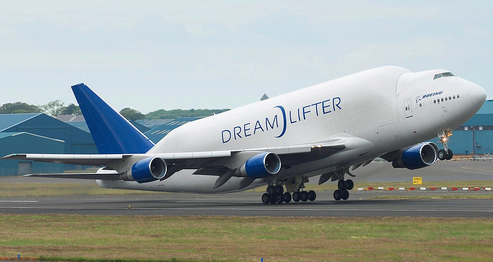

Airbus Beluga XL
အဲဘတ်စ်ရဲ့ ဌာနချုပ်ဖြစ်တဲ့ ပြင်သစ်နိုင်ငံ တူးလူစ်မြို့က စက်ရုံထဲက လေယာဉ်အလုပ်ရုံ L34 မှာတည်ဆောက်နေတဲ့ လေယာဉ်ကြီးဟာ ကမ္ဘာအကြီးဆုံး လေယာဉ်တွေထဲက တစ်စင်းဖြစ်လာမယ့် လေယာဉ်ကြီးတစ်စင်း ဖြစ်ပါတယ်။ လေယာဉ်အများစုရဲ့ ပုံစံဟာ မော်ဒယ်မလေးတွေလို သွယ်လျရှည်လျားတဲ့ ပုံစံရှိပေမယ့် ဒီလေယာဉ်ကြီးကတော့ အိမ်ကမိန်းမကြီးလို ဝဝဖိုင့်ဖိုင့်ကြီး ဖြစ်နေပါတယ်။ သူ့ကိုယ်လုံးဝဝဖိုင့်ဖိုင့်ကြီးနဲ့ ယှဉ်လိုက်ရင် မီတာ ၆၀ (၁၉၇ ပေ) အကျယ်ရှိတဲ့ တောင်ပံဟာ ပုတိုလေး ဖြစ်လို့တောင် နေပါတယ်။အားလုံးခြုံကြည့်လိုက်ရင် ဒီလေယာဉ်ပျံကြီးရဲ့ ပုံစံဟာ ဝေလငါးကြီး တစ်ကောင်နဲ့ တူနေပါတယ်။ ဒီလေယာဉ်ကြီးရဲ့ အမည်ကတော့ Airbus Beluga XL ဖြစ်ပါတယ်။ ဒီလေယာဉ်ရဲ့ အမည်ကလဲ ခေါင်းကြီးဝေလငါးမျိုးစိတ်တစ်ခုရဲ့ အမည်ကို ယူထားခြင်း ဖြစ်ပါတယ်။
လေယာဉ်တွေ ဘယ်လိုလေပေါ်ပျံသလဲ
မိုင်းထိသွားတဲ့ မြန်မာ့လေကြောင်း လေယာဉ်ကြီး
ဒီ လေယာဉ်ပျံ ကြီးကို Airbus က သူ့ရဲ့ ခရီးသည်တင် လေယာဉ်တွေရဲ့ အစိတ်အပိုင်းတွေကို ကမ္ဘာအနှံ့က စက်ရုံတွေ တစ်ရုံကနေ တစ်ရုံကို သယ်ဆောင်ဖို့ တည်ဆောက်နေခြင်း ဖြစ်ပါတယ်။ တစ်စိတ်တစ်ပိုင်း တပ်ဆင်ထားတဲ့ လေယာဉ်ကိုယ်ထည်တွေနဲ့ တောင်ပံတွေကို ကမ္ဘာအနှံ့မှာ ရှိတဲ့ စက်ရုံတွေကနေ နောက်ဆုံးအပြီးသတ် တပ်ဆင်တဲ့ စက်ရုံတွေ တည်ရှိရာ ဂျာမနီ၊ ပြင်သစ်နဲ့ တရုတ်ပြည်က စက်ရုံတွေရှိရာကို သယ်ဆောင်ဖို့ပဲ ဖြစ်ပါတယ်။
အောက်ကဗီဒီယိုမှာ Beluga XL လေယာဉ်တပ်ဆင်ထုတ်လုပ်နေတဲ့ လုပ်ငန်းခွင်မြင်ကွင်းကို မြင်ရမှာ ဖြစ်ပါတယ်။
ဒီလို လေယာဉ်ထုတ်လုပ်တဲ့ စက်ရုံတွေကို ကမ္ဘာအနှံက အကောင်းဆုံး ထုတ်လုပ်သူတွေထံမှာ ဖြန့်ခွဲထုတ်လုပ်တဲ့ ပုံစံကို Airbus က စခဲ့တာဖြစ်ပြီး အောင်မြင်လာတဲ့အတွက် ယခုအခါမှာ ပြိုင်ဖက် Boeing ကုမ္ပဏီကလဲ လိုက်ပါလုပ်ဆောင်နေပါပြီ။
ဒီလို ကြီးမားလေးလံတဲ့ လေယာဉ်အစိတ်အပိုင်းတွေကို ကမ္ဘာအနှံ့ ဖြန့်ခွဲထုတ်လုပ်ရာမှာ ကြုံတွေ့ရတဲ့ အဓိက အခက်အခဲကတော့ ဒီအစိတ်အပိုင်းတွေကို တစ်နေရာက တစ်နေရာကို အချိန်တိုတိုအတွင်း သယ်ယူပို့ဆောင်ပေးနိုင်မယ့် သယ်ယူပို့ဆောင်ရေး လေယာဉ်ကြီးတွေ လိုအပ်လာတာပဲ ဖြစ်ပါတယ်။
၁၉၉၅ ခုနှစ်မှာ ဒီပြဿနာကို ဖြေရှင်းဖို့ အဲဘတ်စ်က Beluga ST ကိုစတင်ထုတ်လုပ်ပြီး သုံးစွဲခဲ့ပါတယ်။ ယခုအခါမှာတော့ အဲဘတ်စ်ဟာ ဒီ Beluga ST လေယာဉ် ၅ စင်းကို ပိုင်ဆိုင်နေပြီ ဖြစ်ပါတယ်။
ဒါပေမယ့် Airbus 380 ရဲ့ အောင်မြင်မှုနဲ့ အတူ လေယာဉ်ထုတ်လုပ်ဖို့ မှာယူမှုတွေ များပြားလာတဲ့အတွက် ယခုလက်ရှိ သယ်ယူပို့ဆောင်ရေး လေယာဉ်ကြီး ၅ စင်းနဲ့ မလုံလောက်တော့ပါဘူး။ ဒါ့ကြောင့် ဒီ Beluga XL လေယာဉ်ကြီးကို တည်ဆောက်နေခြင်းပဲ ဖြစ်ပါတယ်။
မူလ Beluga ST လေယာဉ်ဟာ တောင်ပံ တစ်ခုပဲ သယ်ဆောင်နိုင်ပေမယ့် အခုလေယာဉ် အသစ်ကတော့ လေယာဉ်တောင်ပံ နှစ်ခုတောင်မှာ သယ်ဆောင်ပျံသန်းနိုင်မှာ ဖြစ်ပါတယ်။
အောက်ကဗီဒီယိုမှာ ယခုလက်ရှိ အသုံးပြုနေတဲ့ Airbus Beluga လေယာဉ်ကြီး ပျံတက်နေပုံကို မြင်ရမှာ ဖြစ်ပါတယ်။
Boeing Dream Lifter
ဒီ Beluga XL ဟာ ဧရာမ လေယာဉ်ကြီး ဖြစ်ပေမယ့် ကမ္ဘာအကြီးဆုံး လေယာဉ်ကြီးတော့ မဟုတ်သေးပါဘူး။ ပြိုင်ဖက် Boeing ကုမ္ပဏီက ထုတ်ထုပ်တဲ့ Dreamlifter လေယာဉ်ဟာ သူ့ထက်တောင်မှ ကြီးမားနေပါသေးတယ်။Airbus Beluga XL က ဝေလငါးကြီး တစ်ကောင်နဲ့ တူတယ်ဆိုရင် Boeing Dreamlifter ကတော့ နွားတစ်ကောင်ကို မြိုထားတဲ့ ဧရာမ စပါးကြီးမြွေ တစ်ကောင်နဲ့ ဆင်တူနေပါတယ်။ ဒီလေယာဉ်ကို ဘိုးအင်းရဲ့ နာမည်ကျော် Boeing 747-400 လေယာဉ်ကြီးကို အခြေခံ တည်ဆောက်ထားတာ ဖြစ်ပြီး လေယာဉ် အစိတ်အပိုင်းတွေ စက်ရုံတစ်ရုံကနေ တစ်ရုံကို သယ်ယူပို့ဆောင်ရာမှာ အသုံးပြုပါတယ်။

ကမ္ဘာ့ အကြီးဆုံး လေယာဉ်ပျံ ဖြစ်တဲ့ Antonov An-225
ဘိုးအင်းရဲ့ Dreamlifter က ပစ္စည်းသယ်ဆောင်နိုင်တဲ့ ပမာဏ ပိုများပေမယ့် Beluga XL ကတော့ ဗျက်ပိုကျယ်တဲ့ အတွက် ပိုမိုကြီးမားတဲ့ လေယာဉ်အစိတ်အပိုင်းတွေကို သယ်ဆောင်နိုင်ပါတယ်။ ဒါပေမယ့် ဒီလေယာဉ်ကြီးနှစ်စင်းလုံးဟာ ကမ္ဘာအကြီးမားဆုံး လေယာဉ်ကြီးတွေ မဟုတ်ပြန်ပါဘူးတဲ့။လက်ရှိမှာ ကမ္ဘာ့အကြီးဆုံး လေယာဉ် သရဖူကို ရယူပိုင်ဆိုင်ထားတဲ့ လေယာဉ်ကတော့ ဆိုဗီယက် ရုရှားခေတ်က တည်ဆောက်ခဲ့တဲ့ Antonov An-225 လေယာဉ်ကြီးပဲ ဖြစ်ပါတယ်။ ဒီလေယာဉ်ကြီးကို ၁၉၈၀ ခုနှစ်က တည်ဆောက်ခဲ့တာဖြစ်ပြီး ဆိုဗီယက် အာကသယာဉ်တွေကို သယ်ဆောင်ဖို့ တည်ထွင်ထုတ်လုပ်ထားတာ ဖြစ်ပါတယ်။
ဒီလေယာဉ်ကြီးဟာ ၈၄ မီတာ ရှည်လျားတဲ့အတွက် Beluga XL ထက် မီတာ ၂၀ တောင်မှာ ပိုရှည်ပါသေးတယ်။ တောင်ပံအကျယ် ၈၈ မီတာရှိပြီး ကုန်တန်ချိန် ၂၅၀ တောင်မှာ သယ်ဆောင်ပျံသန်း နိုင်ပါတယ်။ ဒါဟာ Airbus Beluga XL က သယ်ဆောင်နိုင်တဲ့ ကုန်တန်ချိန်ထက် ၅ ဆတောင်မှ ပိုများပါတယ်။
ဒါပေမယ့် လေယာဉ်ကိုယ်ထည်က ကျဉ်းမြောင်းတဲ့ အတွက် လေယာဉ်တောင်ပံတွေကို သယ်ဆောင်ဖို့တော့ မဖြစ်နိုင်ပါဘူး။ အခုအချိန်မှာတော့ ဒီလေယာဉ်ကို တစ်စင်းကို တန်ချိန် ၄၀ – ၅၀ လောက်ရှိတဲ့ အကြီစား တင့်ကားကြီးတွေကို သယ်ဆောင်ဖို့ အသုံးပြုနေပါတယ်။
အောက်ကဗီဒီယိုမှာ ကမ္ဘာ့အကြီးဆုံး Antonov AN-225 လေယာဉ်ကြီး ကွင်းကနေပျံတက်နေတဲ့ပုံကို မြင်ရမှာ ဖြစ်ပါတယ်။